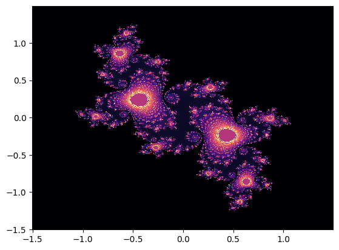

import numpy as np
import matplotlib.pyplot as plt
import math
N = 500
c = -0.1 + 0.65 * 1j
def P(z):
return z**2 + c
lim = 500
iter_max = 1000
julia = np.zeros((N,N))
dx = 3/N
X = np.arange(-1.5,1.5,dx)
Y = np.arange(-1.5,1.5,dx)
xv, yv = np.meshgrid(X,Y)
for k in range(N):
for l in range(N):
z = X[k] + Y[l] * 1j
count = 0
while (abs(z) < lim) and (count < iter_max):
z = P(z)
count += 1
if abs(P(z)) > lim:
julia[int(k),int(l)] = abs(count/N)
else:
julia[int(k),int(l)] = 1
plt.pcolormesh(xv,yv,julia,shading='auto',cmap='magma')
plt.show()
'''
mandelbrot = np.zeros((N,N))
for k in range(N):
for l in range(N):
const = X[k] + Y[l] * 1j
z = 0
count = 0
while (abs(z) < lim) and (count < iter_max):
z = z**2 + const
count += 1
if abs(P(z)) > lim:
mandelbrot[int(k),int(l)] = abs(1/np.log(count))
else:
mandelbrot[int(k),int(l)] = 1
plt.pcolormesh(xv,yv,mandelbrot,shading='auto', cmap = "Blues")
plt.ylim(-1.5,1.0)
'''
'\n\nmandelbrot = np.zeros((N,N))\nfor k in range(N):\n for l in range(N):\n const = X[k] + Y[l] * 1j\n z = 0\n count = 0\n while (abs(z) < lim) and (count < iter_max):\n z = z**2 + const\n count += 1\n if abs(P(z)) > lim:\n mandelbrot[int(k),int(l)] = abs(1/np.log(count))\n else:\n mandelbrot[int(k),int(l)] = 1\n \nplt.pcolormesh(xv,yv,mandelbrot,shading=\'auto\', cmap = "Blues")\nplt.ylim(-1.5,1.0)\n\n'